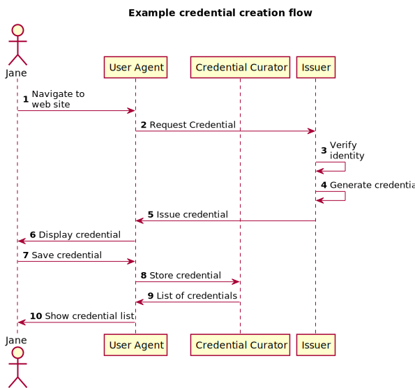
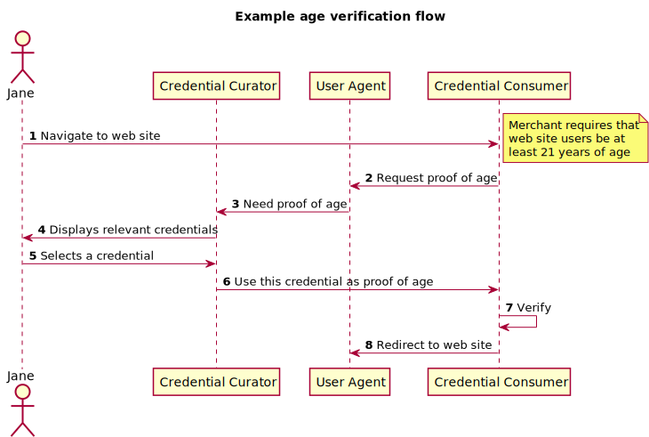

A verifiable claim is a qualification, achievement, quality, or piece of information about an entity's background such as a name, government ID, payment provider, home address, or university degree. The use cases outlined here are provided in order to make progress toward possible future standardization and interoperability of both low and high-stakes claims with the goals of storing, transmitting, and receiving digitally verifiable proof of attributes such as qualifications and achievements. The use cases in this document focus on concrete scenarios that the technology defined by the group should address.
This document represents a concise but limited collection of use cases readers should review in conjunction with the proposed Charter for a Verifiable Claims Working Group.
The Verifiable Claims Task Force of the Web Payments Interest and Credentials COmmunity Groups at the W3C is investigating the requirements around secure, verifiable, and richly descriptive "claims". The goal of the Task Force is to determine if there is a sufficient understanding and need to merit the creation of a W3C Working Group to develop Recommendations in this space.
People need to make many kinds of claims as part of their everyday lives. As more important business moves to the Internet, people need to be able to transmit instantly verifiable claims about their accomplishments and qualifications. From educational records to payment account access, the next generation of web applications will authorize users to perform actions based on rich sets of credentials issued by trusted parties. Human-mediated decisions about job applications, collaboration, and professional development will depend on filtering and analyzing growing amounts of data about individuals' experience and accomplishments.
Standardization of digital claim technologies makes it possible for many stakeholders to issue, earn, and trust these essential records about their counterparties, without being locked into proprietary platforms.
First, review the basic terminology used in section 2. This will give you a good foundation for understanding the rudimentary examples in section 3.
Next, take a look at the examples in section 3 to get a feel for the vision of how claims might be exposed and used in typical web exchanges.
Finally, review the detailed requirements and supporting scenarios in Section 4.
There are also a significant number of "Extended Use Cases" that have been developed by the Credentials Community Group. These are available in their living use case document [[CCG-USE-CASES]]. A review of these is not required, but may give the reader a better sense of the broad ecosystem the Credentials Community Group envisions.
The use cases in this document are organized around some of the basic operations that might be performed on a Verifiable Claim. For each of these operations, the document captures some high level use cases grouped by the requirement they represent. Each use case contains information about its motivation, relative priority, and one or more scenarios to help define the target beneficiaries of its support.
These examples describe basic ways in which Verifiable Claims might be used. They are not meant to be architecturally constraining. Instead, they are meant to help illustrate the basic way it could be done in a typical commerce situation. Again - please remember that it is just an example, and should not be thought of as the canonical way such a claims environment must be implemented.
In this first example, a user will request a Verifiable Claim - a confirmation of their identity. Consider this illustration:
Expanding on these steps:
In this example, a holder of a claim needs to use that claim in a typical commerce situation:
For each requirement in this section, let's ensure there are at least three scenarios. One for each of finance, health care, and education. Additional scenarios are okay, but let's not overwhelm the reader - especially if some are redundant.
The editor is thankful to the following contributions from the Web Payments Workshop, the Web Payments Community Group, and the Credentials Community Group, specifically (in alphabetical order): TBD